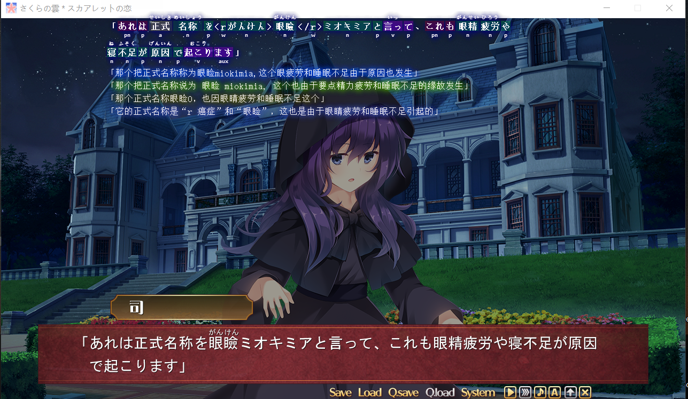
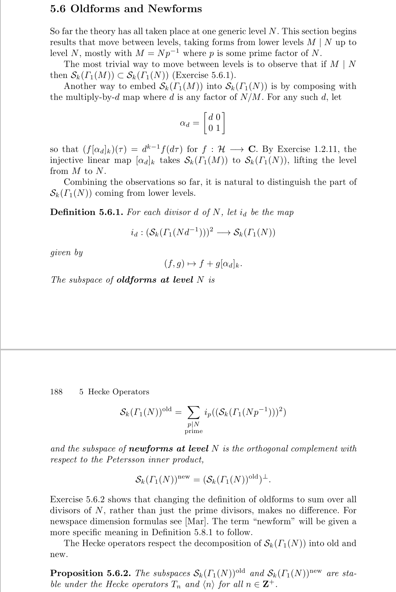

翻译那些事
翻译是件很平凡的事，平凡到也不知道有什么好讲的。但是体会一下多种语言的交互也是一件很美妙的事情，最开始引起我对翻译进行思考的是下面这篇漫画
说实话，我很久，甚至没有见过，哪个翻译直接在漫画后面说翻译问题。在第一幅图有两个不太恰当的地方，看译文没什么感觉，我特地看了一下原文
把第一句单纯拷贝过来是这样的，“あいつにさ気にすなっつっといて”，机翻还真是我在意那家伙(aitu)，但考虑上下文，说话的人快要死了，说话应该是断断续续的，可以看到“あいつにさ…”少了一些东西，但看到“sa”应该是使动用法，“気にすなっ”中看到“na”应该是在“nai”加后缀的时候去掉了“i”，表示别在意，“つっといて”由“つる+おく+て”组成，意思是一个人传递给另一个人，看到“て”是“てください”的简略版，表示请求，所以整句话表达了，请求听者将别在意自己这件事给传达过去。第二句，将“名字+のこと”翻译成“XX的事”，字面好像确实是这样，但原因是日语里的名字和中文里的名字包含的分量不同，在日语里名字是单纯的一个称谓，如果要包含名字所代表的人的全部，就如同字面那样加上“のこと”，简单来说，就是习惯问题。
我们再继续说说日语吧，因为我平常用日语比英语还多，而且日语更有难度一些，有人可能觉得日语里有很多汉字应该更好理解才对。理解外文真正困难的地方在于变形，变形到你基本认不出原文是什么，如果只是单纯的一个词语的话，我们可以查字典，又或者依据上下文。日语是我目前见过的变形最严重的语言，日语的谓语拥有最为丰富的变形，可以传达的意思也非常的多。其实韩语的语法也差不多，但是它后期完全不用汉字让我不是很喜欢，另一方面日语相关的资料也比较多。我们再来看一个非口语的翻译例子
歪んだ憂いが飛び交う中で 身处扭曲的忧愁交错之中
失い 失い 膝をつく道化 不断经历失去 小丑跪倒在地
あの蝶は，自由になれたかな 不知那只蝴蝶是否获得了自由
情熱は孤独と燃える 热情就这么和孤独一同焚烧
昨日の自分に興味なんかない 我对昨天的自己没有任何兴趣
白黒 返す言葉 裏表 白与黑 换言之就是 表与里
常識とかいう偏見を編み込み 编织名为常识的偏见
明暗を分かつマジョリティ 多数派就这么划开明暗界线
天才を演じてる馬鹿はお前か 扮演天才的傻瓜是你吗
ないし馬鹿をやりつづけてる天才かい？ 亦或是持续装傻的天才
最後に笑うのはどちらの女神だろう 不知最后露出微笑的会是谁的女神
曖昧な狂気が僕の喉を乾かす 暧昧的疯狂风化了我的咽喉
輪郭が定義される前に 在轮廓定型之前
ロジックを覆せ！ 颠覆逻辑吧
ああ，机上の空論を夢と呼ぶ 把纸上谈兵当成梦想
無謀の中に光は宿った 光芒就这么寄宿在鲁莽之中
鬱陶しい風 振り払って 挥开这道烦人的风
力を今示そう 现在就展示自己的能力吧
嘘も真実も明かせ！ 揭开谎言与真相
这虽然是一段歌词，但句子都比较书面的，我直接采用了字幕组的翻译。第一句末尾“で”表示在什么地方，这里翻译为“身处…”这是因为主语是小丑(道化)，表示人。“失い”表示失去，连续两个，它翻译成了不断失去，从上下情景来看的话，意思没什么问题。第四句，特地加了“就这么”，明明写成“热情和孤独一同焚烧”就够了。比较有趣的是第七句，串下来就是“分割明暗 多数”，有人把它翻译成了“眼中只论胜败结果的芸芸大众”，说实在，我一度以为这是不是翻译得有点过头了。但从辞书里，我发现在惯用语里“明暗”可以用来表示胜负，“分かつ”则有辨别的意思，但大多数只能辨别出胜和负两种东西的时候，换言之，他们看不到胜负之外的东西，在从整个动漫的情景来看的话，这句话确实是在表达“学院里的很多人眼里只有胜负”。剩下的就不说了，翻译这回事很大程度取决于为啥要翻译，如果想要优美完全可以靠翻译者的想象力来脑补。
在我的认知里，翻译其实是件无所谓的事情，能知道句子想要传递什么就足够了，至于精确什么的？语法什么的？都是应试教育需要考虑的东西。我将翻译看成一种再创造，它在原文的基础上包含了作者自己的理解，我并不讨厌翻译，只是不想因为翻译而耽误很多事情，对于我学过的语言，机翻配合我的能力就足够理解很多东西了。拿我最近玩的一个游戏为例，机翻有很多的不足
不论是本地的机翻，还是目前我觉得机翻最好用的百度翻译，感觉翻译的都不是很好。但重要吗？不重要，因为我们很容易看出，这是在表达对别人打自己的不满。机翻对于口语，特别是那种断断续续地口语，基本就是翻译不出来的
“gomene”一拼读，我们就知道这是在说对不起
这一句就翻译得更离谱了，其实只是所长将“百元(manen)”拉长地读了一遍。在读生肉的时候还可能会遇到一些与本意不同的词语
意思是歪斜，但是这样吗？是也不是，这是在特定语境下拥有的含义的词，在这个游戏里有这个意思，但在其它地方就不同了，理解需要靠上下文
“只是，这个帝都还残留着许多歪斜”，后面还有许多提及的地方，总得来说，它指的其实就是宪兵长对这个时代的干扰，导致帝都偏离了原有轨迹的意思，而主角的目的是通过解决案件来修复帝都在历史轨迹中偏离的部分。当然很大一部分原因是这个游戏用词太不老实了
在“山々”中，“々”表示重复前一个汉字，乍看之下表示群山或很多，但这里偏偏表示想要，不过“动词+たいのは山々”也是个比较固定的句式表示很想，其实“たい”已经表示想了，我猜吧，“山々”应该只是进一步加强“想”这件事的。类似的例子还有很多
在这里用“物色”来表示寻找，它们确实都有这样的意思，但真的不是很常用。后来我仔细思考了一下，或许是作者想要表达时代背景吧，也就1920年的日本，另一个例子是这个
一开始我也没注意到，但恰巧仔细听了舞(マイ)的语音后发现，她自称的时候是(atashi)而不是(watashi)，据说前者更加谦虚，现代日本男女之间就已经自称的区别了，在那个时代还得更加谦虚。玩这部游戏的时候，机翻烂到了极点，仔细想想也对，因为现代机翻基本都是基于神经网络，而训练的样本都是现代的语料，对于比较不现代的输入出现差异是挺正常的。不过机翻有时会带来一些奇妙的惊喜，比如下面这句
后面表示赶紧前往现场毫无疑问，但前面这句的第四个翻译，最开始我以为是共享辞书里哪个小天才贡献的翻译，后来发现确实是某个在线翻译的结果，当然这句话本来是反问句“现在是下将棋的时候吗？”我说这么多其实只想表达一件事情，翻译成什么其实并不重要，知道说了件什么事就足够了，最后是下面这个例子
就算我们不特地去查“閑古鳥”是什么意思，结合上下文，它是事务所一直的状态，并且多次来的女仆都知道的事实，明显指的就是事务所没什么生意的意思，至于要不要翻译成萧条、不景气什么的也没啥必要。
趁此机会说说这个游戏吧，目前在莲线实在不想推了，将我的路线固定就算了，但凭啥莲线比远子线长这么多，虽说我一直想要到所长线，但远子还是挺讨喜的。整个游戏以解决案件为主要内容，虽说都不是什么大案件，而且解决的方式也十分平凡，但我挺喜欢的。最开始寻找的绿藻，还是得与画家换，其实主角有提到过比较远的某个湖里可能有，但并没有去，这其实就是地域性，这太现实了，说走就走还真没那么简单，我们一直都在固定的地方过着固定的什么，像井底之蛙一样，不禁为自己感到怜悯。游戏里面，作者的见识有点广
比如物理的共振现象，虽然我也知道就是了
现实的潜睡，这个其实我也体验过很多次，那时你在睡觉，但感觉没有睡着，而且感觉被束缚，丝毫不想动的感觉
还有医学相关的“眼睑闭合不全”
连与数学相关的取子游戏都可以拿来说。虽说闹鬼事件是感觉解释最为牵强的一个，比如看到落魄武士，先解释这是在潜睡的梦里，再解释这是因疲劳而所做的恶梦。不过这应该是我目前最喜欢的一个
它说明了一件很朴素的事情——平凡。游戏中有些文字在图片里面
这其实是游戏中唯一难受的地方，主要还是我的文字识别引擎太拉跨了，它没有反着识别的功能，就是书写顺序问题，对于对话框的文本，通过hook可以准确地提取出来。图片可以靠文字识别，但它书写顺序又不符合目前的习惯，导致文字识别的顺序十分的乱。不过其实很多对理解上下文影响不大，所以也不是很在意。
最后，我拿个英语的例子来说说我为啥比较喜欢读原文。最近，我在研究模形式，遇到一个叫“新形式”的东西，我有好几个资料，但形式的差别有点大
这是我觉得最拉跨的一个，当然可能书比较远古的原因
这是我觉得最故弄玄虚的一个，不如说整本书都在故弄玄虚，说话毫无逻辑，符号乱七八糟，我从来没见过这么拉跨的数学课本

这是表达得比较清晰的一个，但它却是从外文翻译过来的
这是目前我最认可的表达，将映射、集合和像分开表达，这里的逻辑结构我最为欣赏了，而且这也是我目前学习模形式的主要教程。如果有精力去进行仔细的研究的话，它们的本质确实一样，但教材的目的是什么呢？将复杂的东西，简单明了地表达出来，如果书的目的不是为了让你读懂，但它没有存在的必要了，还不如直接去读定义-定理全集算了。特别是有时候你说得越多，反而会让人更加模糊，就和某些论文一样，为了字数而增加字数，论文本来就应该精简地将过程和结果传达出来，但因为字数的要求，却不得不把一个简单的结论说复杂，这难道不可悲吗？崇洋媚外吗？这也是文论的说辞吧。
翻译没啥好说的，也就那么一回事，翻不翻译无所谓，别被别人牵着鼻子走就行了。